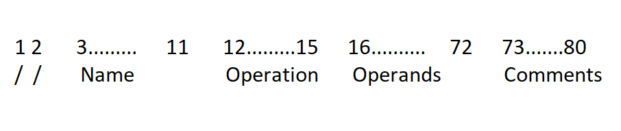

JCL(job control language)
Jcl acts as an interface between a programming language and the operating system.
Every task(program) executed in mainframe is considered as a job and submitted by JCL to operating
system.
- Uses of JCL
- It is used to compile and execute programs.
- It is used to create data sets,GDG,VSAM cluster.
- It is used to copy data from one dataset to another dataset.
- It is used to sort and merge the data in a file.
- It is used to compare two files or pds members.
What are the different JCL statement and function:
There are 8 JCL function
- JOB(mandatory)
- EXEC(mandatory)
- DD(mandatory)
- PROC(used to start the instream proc)
- PEND(used to end the instream proc)
- JCLLIB(used to call catalogue proc)
- PEND(used in symbolic overriding proc)
- PEND(used to make the job end)
Structure of JCL
All JCL statement consist of 5 types of fields
1. //
The 2 forward slases are requried at the beginning of each JCL statement in column 1 & 2.
2.Name field
-This is an optional field. if coded,should start at position 3,its maximum length is 8.
3.Operation field
-it indicates the operation that is to be performed.
4.Opeand field
-This fiels must after operation field.Must start at 16th column.
5.Comment
-Comments begin one space after the last opearnd.Our simple example has no comments.
